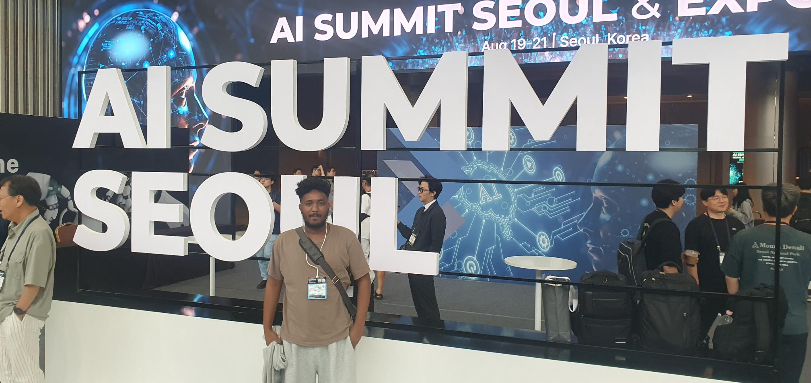
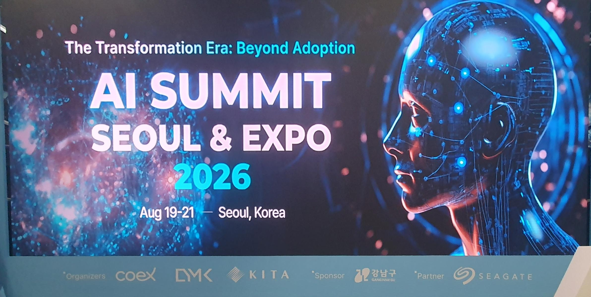
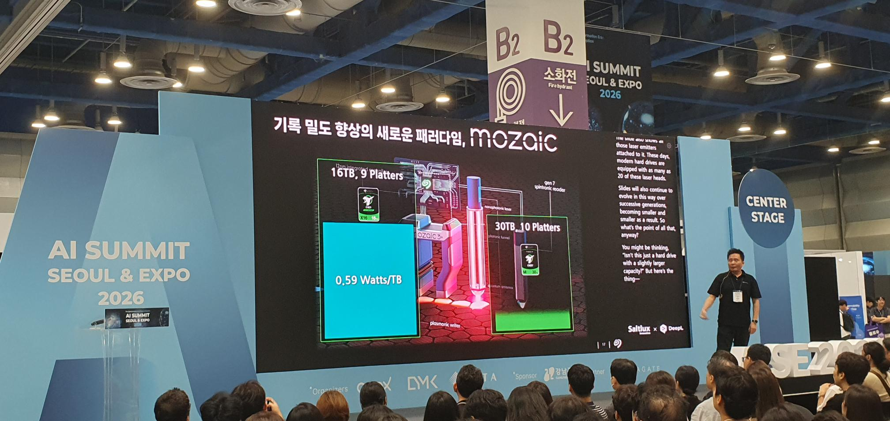
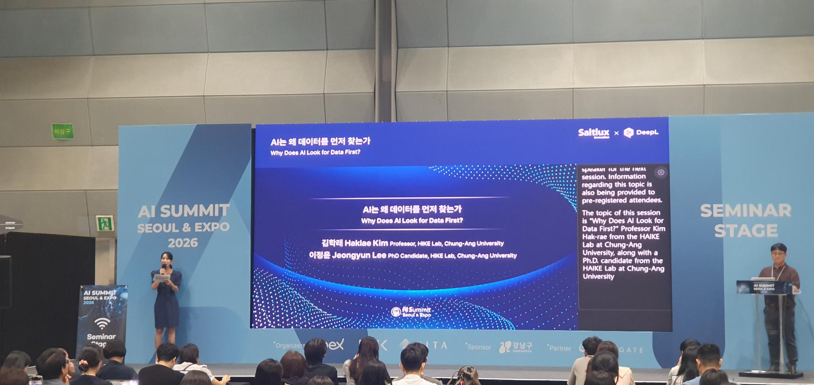

Visiting AI Summit Seoul & Expo 2026 gave me a useful opportunity to see the AI ecosystem. I spent time walking through the exhibition, attending workshops and presentations, and speaking directly with tech representatives. I briefly visited booths including Alchemist Inc, Aifrica, Apple Manufacturing R&D Accelerator, HP Korea, FainRobotics, and PUDU Robotics, while spending more time in technical discussions with representatives from AiM Future, CAST AI, ENERZAi, RealMan Robotics, Seagate, and You.com.

One of the most useful parts of the visit was talking with providers working at different layers of the AI stack. Some conversations focused on data preparation and management, which remains essential for building reliable AI systems, while others covered the computing hardware and infrastructure required to run increasingly demanding models. I also visited robotics companies, where AI moves beyond software into physical systems that can perceive, decide, and act in the real world.

The seminars and demonstrations around AI agents and agent-building platforms were particularly interesting. Instead of using AI only as a chatbot or isolated productivity tool, many companies are now working toward systems that can connect with business data, tools, and workflows and perform more complex tasks. Hearing the concepts during seminars and then discussing actual implementations with vendors made it easier to understand both the potential and the practical challenges of deploying these systems.

My main takeaway from the AISE2026 was how interconnected every layer of AI has become — data at the foundation, compute and storage underneath the models, platforms connecting models with tools and workflows, agents making increasingly complex decisions, and robotics bringing those capabilities into the physical world. Seeing these different parts of the ecosystem in the same place—and being able to talk directly with the companies building them—gave me a much clearer picture of where AI technology is today, while also highlighting a notable gap in AI for materials and manufacturing.